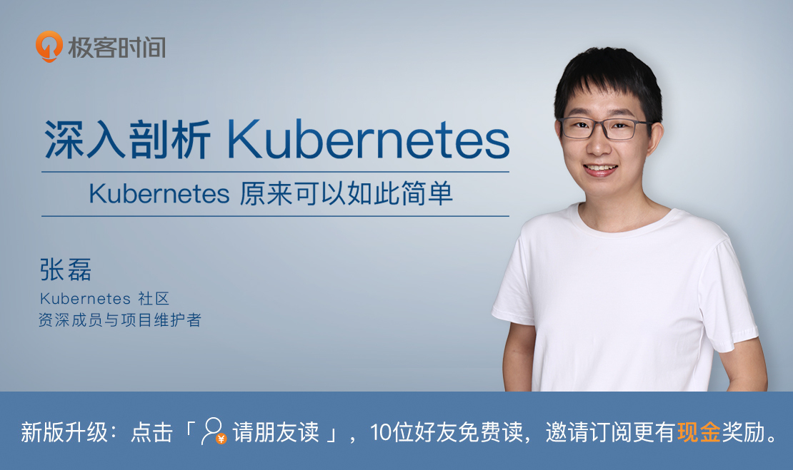

- 00 开篇词 打通“容器技术”的任督二脉.md.html
- 01 预习篇 · 小鲸鱼大事记（一）：初出茅庐.md.html
- 02 预习篇 · 小鲸鱼大事记（二）：崭露头角.md.html
- 03 预习篇 · 小鲸鱼大事记（三）：群雄并起.md.html
- 04 预习篇 · 小鲸鱼大事记（四）：尘埃落定.md.html
- 05 白话容器基础（一）：从进程说开去.md.html
- 06 白话容器基础（二）：隔离与限制.md.html
- 07 白话容器基础（三）：深入理解容器镜像.md.html
- 08 白话容器基础（四）：重新认识Docker容器.md.html
- 09 从容器到容器云：谈谈Kubernetes的本质.md.html
- 10 Kubernetes一键部署利器：kubeadm.md.html
- 11 从0到1：搭建一个完整的Kubernetes集群.md.html
- 12 牛刀小试：我的第一个容器化应用.md.html
- 13 为什么我们需要Pod？.md.html
- 14 深入解析Pod对象（一）：基本概念.md.html
- 15 深入解析Pod对象（二）：使用进阶.md.html
- 16 编排其实很简单：谈谈“控制器”模型.md.html
- 17 经典PaaS的记忆：作业副本与水平扩展.md.html
- 18 深入理解StatefulSet（一）：拓扑状态.md.html
- 19 深入理解StatefulSet（二）：存储状态.md.html
- 20 深入理解StatefulSet（三）：有状态应用实践.md.html
- 21 容器化守护进程的意义：DaemonSet.md.html
- 22 撬动离线业务：Job与CronJob.md.html
- 23 声明式API与Kubernetes编程范式.md.html
- 24 深入解析声明式API（一）：API对象的奥秘.md.html
- 25 深入解析声明式API（二）：编写自定义控制器.md.html
- 26 基于角色的权限控制：RBAC.md.html
- 27 聪明的微创新：Operator工作原理解读.md.html
- 28 PV、PVC、StorageClass，这些到底在说啥？.md.html
- 29 PV、PVC体系是不是多此一举？从本地持久化卷谈起.md.html
- 30 编写自己的存储插件：FlexVolume与CSI.md.html
- 31 容器存储实践：CSI插件编写指南.md.html
- 32 浅谈容器网络.md.html
- 33 深入解析容器跨主机网络.md.html
- 34 Kubernetes网络模型与CNI网络插件.md.html
- 35 解读Kubernetes三层网络方案.md.html
- 36 为什么说Kubernetes只有soft multi-tenancy？.md.html
- 37 找到容器不容易：Service、DNS与服务发现.md.html
- 38 从外界连通Service与Service调试“三板斧”.md.html
- 39 谈谈Service与Ingress.md.html
- 40 Kubernetes的资源模型与资源管理.md.html
- 41 十字路口上的Kubernetes默认调度器.md.html
- 42 Kubernetes默认调度器调度策略解析.md.html
- 43 Kubernetes默认调度器的优先级与抢占机制.md.html
- 44 Kubernetes GPU管理与Device Plugin机制.md.html
- 45 幕后英雄：SIG-Node与CRI.md.html
- 46 解读 CRI 与 容器运行时.md.html
- 47 绝不仅仅是安全：Kata Containers 与 gVisor.md.html
- 48 Prometheus、Metrics Server与Kubernetes监控体系.md.html
- 49 Custom Metrics_ 让Auto Scaling不再“食之无味”.md.html
- 50 让日志无处可逃：容器日志收集与管理.md.html
- 51 谈谈Kubernetes开源社区和未来走向.md.html
- 52 答疑：在问题中解决问题，在思考中产生思考.md.html
- 特别放送 2019 年，容器技术生态会发生些什么？.md.html
- 特别放送 基于 Kubernetes 的云原生应用管理，到底应该怎么做？.md.html
- 结束语 Kubernetes：赢开发者赢天下.md.html
- 捐赠
52 答疑：在问题中解决问题，在思考中产生思考
在本篇文章中，我将会对本专栏部分文章最后的思考题，进行一次集中的汇总和答疑。希望能够帮助你更好地理解和掌握 Kubernetes 项目。
问题1：你是否知道如何修复容器中的top指令以及/proc文件系统中的信息呢？（提示：lxcfs）
其实，这个问题的答案在提示里其实已经给出了，即 lxcfs 方案。通过lxcfs，你可以把宿主机的 /var/lib/lxcfs/proc 文件系统挂载到Docker容器的/proc目录下。使得容器中进程读取相应文件内容时，实际上会从容器对应的Cgroups中读取正确的资源限制。 从而得到正确的top 命令的返回值。
问题选自第6篇文章《白话容器基础（二）：隔离与限制》。
问题2：既然容器的rootfs（比如，Ubuntu镜像），是以只读方式挂载的，那么又如何在容器里修改Ubuntu镜像的内容呢？（提示：Copy-on-Write）
这个问题的答案也同样出现在了提示里。
简单地说，修改一个镜像里的文件的时候，联合文件系统首先会从上到下在各个层中查找有没有目标文件。如果找到，就把这个文件复制到可读写层进行修改。这个修改的结果会屏蔽掉下层的文件，这种方式就被称为copy-on-write。
问题选自第7篇文章《白话容器基础（三）：深入理解容器镜像》。
问题3：你在查看Docker容器的Namespace时，是否注意到有一个叫cgroup的Namespace？它是Linux 4.6之后新增加的一个Namespace，你知道它的作用吗？
Linux 内核从4.6开始，支持了一个新的 Namespace叫作：Cgroup Namespace。 我们知道，正常情况下，在一个容器里查看/proc/$PID/cgroup，是会看到整个宿主机的cgroup信息的。而有了Cgroup Namespace后，每个容器里的进程都会有自己Cgroup Namespace，从而获得一个属于自己的 Cgroups 文件目录视图。也就是说，Cgroups 文件系统也可以被 Namespace 隔离起来了。
问题选自第8篇文章《 白话容器基础（四）：重新认识Docker容器》](https://time.geekbang.org/column/article/18119)。
问题4：你能否说出，Kubernetes使用的这个“控制器模式”，跟我们平常所说的“事件驱动”，有什么区别和联系吗？
这里“控制器模式”和“事件驱动”最关键的区别在于：
对于控制器来说，被监听对象的变化是一个持续的信号，比如变成 ADD 状态。只要这个状态没变化，那么此后无论任何时候控制器再去查询对象的状态，都应该是 ADD。
而对于事件驱动来说，它只会在 ADD 事件发生的时候发出一个事件。如果控制器错过了这个事件，那么它就有可能再也没办法知道 ADD 这个事件的发生了。
问题选自第16篇文章《编排其实很简单：谈谈“控制器”模型》。
问题5：在实际场景中，有一些分布式应用的集群是这么工作的：当一个新节点加入到集群时，或者老节点被迁移后重建时，这个节点可以从主节点或者其他从节点那里同步到自己所需要的数据。
在这种情况下，你认为是否还有必要将这个节点Pod与它的PV进行一对一绑定呢？（提示：这个问题的答案根据不同的项目是不同的。关键在于，重建后的节点进行数据恢复和同步的时候，是不是一定需要原先它写在本地磁盘里的数据）
这个问题的答案是不需要。
像这种不依赖于 PV 保持存储状态或者不依赖于 DNS 名字保持拓扑状态的”非典型“应用的管理，都应该使用 Operator 来实现。
问题选自第19篇文章《深入理解StatefulSet（二）：存储状态》。
问题6：我在文中提到，在Kubernetes v1.11之前，DaemonSet所管理的Pod的调度过程，实际上都是由DaemonSet Controller自己而不是由调度器完成的。你能说出这其中有哪些原因吗？
这里的原因在于，默认调度器之前的功能不是很完善，比如，缺乏优先级和抢占机制。所以，它没办法保证 DaemonSet ，尤其是部署时候的系统级的、高优先级的 DaemonSet 一定会调度成功。这种情况下，就会影响到集群的部署了。
问题选自第21篇文章《容器化守护进程的意义：DaemonSet》。
问题7：在Operator的实现过程中，我们再一次用到了CRD。可是，你一定要明白，CRD并不是万能的，它有很多场景不适用，还有性能瓶颈。你能列举出一些不适用CRD的场景么？你知道造成CRD性能瓶颈的原因主要在哪里么？
CRD 目前不支持protobuf，当 API Object数量 >1K，或者单个对象 >1KB，或者高频请求时，CRD 的响应都会有问题。 所以，CRD 千万不能也不应该被当作数据库使用。
其实像 Kubernetes ，或者说 Etcd 本身，最佳的使用场景就是作为配置管理的依赖。此外，如果业务需求不能用 CRD 进行建模的时候，比如，需要等待 API 最终返回，或者需要检查 API 的返回值，也是不能用 CRD 的。同时，当你需要完整的 APIServer 而不是只关心 API 对象的时候，请使用 API Aggregator。
问题选自第27篇文章《聪明的微创新：Operator工作原理解读》。
问题8：正是由于需要使用“延迟绑定”这个特性，Local Persistent Volume目前还不能支持Dynamic Provisioning。你是否能说出，为什么“延迟绑定”会跟Dynamic Provisioning有冲突呢？
延迟绑定将 Volume Bind 的时机，推迟到了第一个使用该 Volume 的 Pod 到达调度器的时候。可是对于Dynamic Provisioning 来说，它是要在管理 Volume的控制循环里就为 PVC 创建 PV 然后绑定起来的，这个时间点跟Pod 被调度的时间点是不相关的。
问题选自第29篇文章《 PV、PVC体系是不是多此一举？从本地持久化卷谈起》。
问题9：请你根据编写FlexVolume和CSI插件的流程，分析一下什么时候该使用FlexVolume，什么时候应该使用CSI？
在文章中我其实已经提到，CSI 与 FlexVolume 的最大区别，在于 CSI 可以实现 Provision 阶段。所以说，对于不需要 Provision的情况 ，比如你的远程存储服务总是事先准备好或者准备起来非常简单的情况下，就可以考虑使用FlexVolume。但在生产环境下，我都会优先推荐 CSI的方案。
问题选自第31篇文章《容器存储实践：CSI插件编写指南》。
问题10：Flannel通过“隧道”机制，实现了容器之间三层网络（IP地址）的连通性。但是，根据这个机制的工作原理，你认为Flannel能保证容器二层网络（MAC地址）的连通性吗？为什么呢？
不能保证，因为“隧道”机制只能保证被封装的 IP 包可以到达目的地。而只要网络插件能满足 Kubernetes 网络的三个假设，Kubernetes 并不关心你的网络插件的实现方式是把容器二层连通的，还是三层连通的。
问题选自第33篇文章《深入解析容器跨主机网络》。
问题11：你能否能总结一下三层网络方案和“隧道模式”的异同，以及各自的优缺点？
在第35篇文章的正文里，我已经为你讲解过，隧道模式最大的特点，在于需要通过某种方式比如 UDP 或者 VXLAN 来对原始的容器间通信的网络包进行封装，然后伪装成宿主机间的网络通信来完成容器跨主通信。这个过程中就不可避免地需要封包和解封包。这两个操作的性能损耗都是非常明显的。而三层网络方案则避免了这个过程，所以性能会得到很大的提升。
不过，隧道模式的优点在于，它依赖的底层原理非常直白，内核里的实现也非常成熟和稳定。而三层网络方案，相对来说维护成本会比较高，容易碰到路由规则分发和设置出现问题的情况，并且当容器数量很多时，宿主机上的路由规则会非常复杂，难以Debug。
所以最终选择选择哪种方案，还是要看自己的具体需求。
问题选自第35篇文章《解读Kubernetes三层网络方案》。
问题12：为什么宿主机进入MemoryPressure或者DiskPressure状态后，新的Pod就不会被调度到这台宿主机上呢？
在 Kubernetes 里，实际上有一种叫作 Taint Nodes by Condition 的机制，即当
Node 本身进入异常状态的时候，比如 Condition 变成了DiskPressure。那么， Kubernetes 会通过 Controller自动给Node加上对应的 Taint，从而阻止新的 Pod 调度到这台宿主机上。
问题选自第40篇文章《Kubernetes的资源模型与资源管理》。
问题13：Kubernetes默认调度器与Mesos的“两级”调度器，有什么异同呢？
Mesos 的两级调度器的设计，是Mesos 自己充当0层调度器（Layer 0），负责统一管理整个集群的资源情况，把可用资源以 Resource Offer 的方式暴露出去；而上层的大数据框架（比如 Spark）则充当1层调度器（Layer 1），它会负责根据Layer 0发来的Resource Offer来决定把任务调度到某个具体的节点上。这样做的好处是：
第一，上层大数据框架本身往往自己已经实现了调度逻辑，这样它就可以很方便地接入到 Mesos 里面；
第二，这样的设计，使得Mesos 本身能够统一地对上层所有框架进行资源分配，资源利用率和调度效率就可以得到很好的保证了。
相比之下，Kubernetes 的默认调度器实际上无论从功能还是性能上都要简单得多。这也是为什么把 Spark 这样本身就具有调度能力的框架接入到 Kubernetes 里还是比较困难的。
问题选自第41篇文章《十字路口上的Kubernetes默认调度器》。
问题14：当整个集群发生可能会影响调度结果的变化（比如，添加或者更新 Node，添加和更新 PV、Service等）时，调度器会执行一个被称为MoveAllToActiveQueue的操作，把所调度失败的 Pod 从 unscheduelableQ 移动到activeQ 里面。请问这是为什么？
一个相似的问题是，当一个已经调度成功的 Pod 被更新时，调度器则会将unschedulableQ 里所有跟这个 Pod 有 Affinity/Anti-affinity 关系的 Pod，移动到 activeQ 里面。请问这又是为什么呢？
其实，这两个问题的答案是一样的。
在正常情况下，默认调度器在调度失败后，就会把该 Pod 放到 unschedulableQ里。unschedulableQ里的 Pod 是不会出现在下个调度周期里的。但是，当集群本身发生变化时，这个 Pod 就有可能再次变成可调度的了，所以这时候调度器要把它们移动到activeQ里面，这样它们就获得了下一次调度的机会。
类似地，当原本已经调度成功的 Pod 被更新后，也有可能触发unschedulableQ里与它有Affinity 或者 Anti-Affinity 关系的 Pod 变成可调度的，所以它也需要获得“重新做人”的机会。
问题选自第43篇文章《Kubernetes默认调度器的优先级与抢占机制》。
问题15：请你思考一下，我前面讲解过的Device Plugin 为容器分配的 GPU 信息，是通过 CRI 的哪个接口传递给 dockershim，最后交给 Docker API 的呢？
既然 GPU 是Devices 信息，那当然是通过CRI 的CreateContainerRequest接口。这个接口的参数ContainerConfig里就有容器 Devices 的描述。
问题选自第46篇文章《解读 CRI 与 容器运行时》。
问题16：安全容器的意义，绝不仅仅止于安全。你可以想象一下这样一个场景：比如，你的宿主机的 Linux 内核版本是3.6，但是应用却必须要求 Linux 内核版本是4.0。这时候，你就可以把这个应用运行在一个 KataContainers 里。那么请问，你觉得使用 gVisor 是否也能提供这种能力呢？原因是什么呢？
答案是不能。gVisor 的实现里并没有一个真正的Linux Guest Kernel 在运行。所以它不能像 KataContainers 或者虚拟机那样，实现容器和宿主机不同 Kernel 甚至不同操作系统的需求。
但还是要强调一下，以gVisor 为代表的用户态 Kernel 方案是安全容器的未来，只是现在还不够完善。
问题选自第47篇文章《绝不仅仅是安全：Kata Containers 与 gVisor》。
问题17：将日志直接输出到 stdout 和 stderr，有没有什么其他的隐患或者问题呢？如何进行处理呢？
这样做有一个问题，就是日志都需要经过 Docker Daemon 的处理才会写到宿主机磁盘上，所以宿主机没办法以容器为单位进行日志文件的 Rotate。这时候，还是要考虑通过宿主机的 Agent 来对容器日志进行处理和收集的方案。
问题选自第50篇文章《让日志无处可逃：容器日志收集与管理》。
问题18：你能说出 Kubernetes 社区同 OpenStack 社区相比的不同点吗？你觉得各有哪些优缺点呢？
OpenStack 社区非常强调民主化，治理方式相对松散，这导致它在治理上没能把主线和旁线分开，政治和技术也没有隔离。这使得后期大量的低价值或者周边型的项目不断冲进 OpenStack社区，大大降低了社区的含金量，并且分散了大量的社区精力在这些价值相对不高的项目上，从而拖慢并干扰了比如 Cinder、Neutron 等核心项目的演进步伐和方向，最终使得整个社区在容器的热潮下难以掉头，不可避免地走向了下滑的态势。
相比之下，CNCF 基金会成功地帮助 Kubernetes 社区分流了低价值以及周边型项目的干扰，并且完全承接了 Marketing 的角色，使得 Kubernetes 社区在后面大量玩家涌入的时候，依然能够专注在主线的演进上。
Kubernetes社区和OpenStack社区的这个区别，是非常关键的。
问题选自第51篇文章《谈谈Kubernetes开源社区和未来走向》。
感谢你的收听，欢迎你给我留言，也欢迎分享给更多的朋友一起阅读。

© 2019 - 2023 Liangliang Lee. Powered by gin and hexo-theme-book.